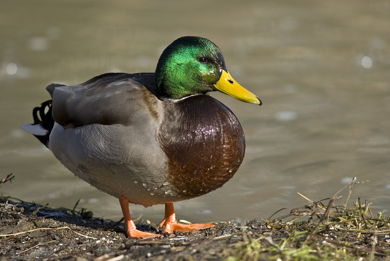
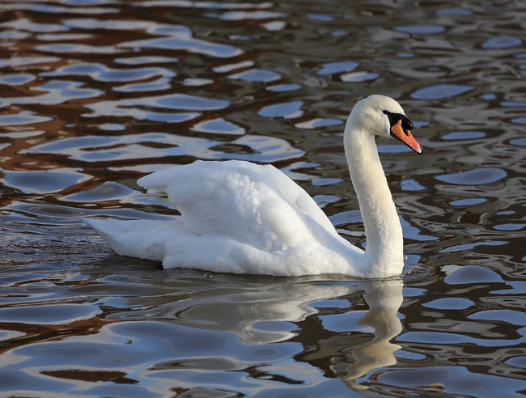

List of Some Birds
Here is a list of some birds that I thought of
DUCK
This duck is a fun bird for all to enjoy. It makes fun noises and looks cool in the water when it swims and eats things. I like the duck. Quacking noises etc.
SWAN
This swan is a big bird and famous. Overrated bird in my opinion. Doesn't make sounds and not fun. Not my favorite.
CHICKEN

Chicken is a mediocre bird. Still better than the swan but can't fly or swim or anything fun like that. Nothing against the chicken but it just doesn't tug at my heartstrings like other birds do.